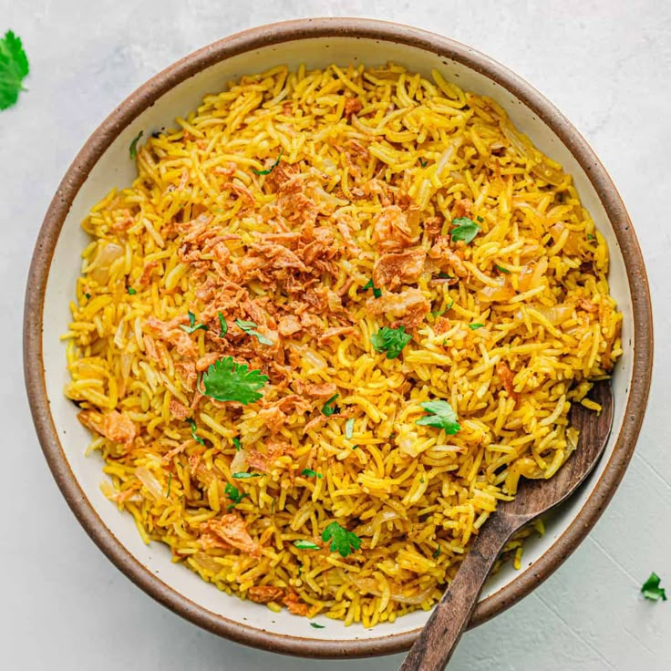

← Back to Menu
Quick Spiced Rice
Fluffy rice with simple warming spices.

Ingredients
- 1 cup basmati rice
- 1 tsp turmeric
- 1 tsp cumin seeds
- 2 cups water
- Salt to taste
Instructions
- Rinse rice under cold water until clear.
- In a pot, heat a little oil and toast cumin seeds.
- Add rice, turmeric, and water. Bring to boil.
- Cover, reduce heat and simmer 15 minutes.
- Fluff with a fork and serve.